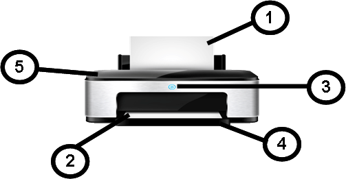
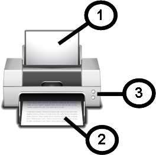
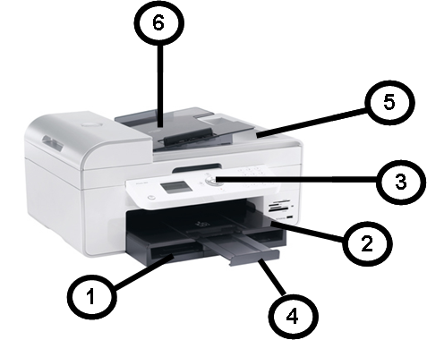

يوفر الشكل التالي والجدول المرتبط به مرجعًا سريعًا لمكونات الطابعة.



يوضح الجدول التالي شرح الرموز الموجودة في الشكل:
| الرقم | الوصف |
|---|---|
| 1 | درج الإدخال |
| 2 | درج الإخراج |
| 3 | لوحة التحكم |
| 4 | امتداد درج الإخراج |
| 5 | الماسح الضوئي |
| 6 | وحدة التغذية التلقائية للمستندات |